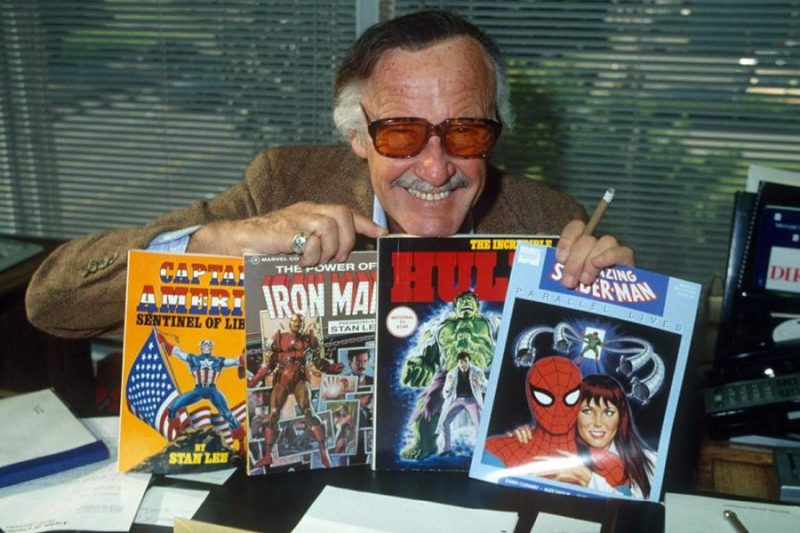

“That person who helps others simply because it should or must be done, and because it is the right thing
to do, is indeed without a doubt, a real superhero.”
TIMELINE
December 28, 1922 Stanley Martin Lieber was born in Manhattan, New York City, in the
apartment of his Romanian-born Jewish immigrant parents, Celia (née Solomon) and Jack Lieber, at the
corner of West 98th Street and West End Avenue.
1939 With the help of his uncle Robbie Solomon, Lee became an assistant at the new Timely
Comics division belonging to pulp magazine and comic-book publisher Martin Goodman. Timely, by the
1960s, would evolve into Marvel Comics.
1941 Stan graduated from writing filler to actual comics with a backup feature, "'Headline'
Hunter, Foreign Correspondent", two issues later. Lee's first superhero co-creation was the Destroyer,
in Mystic Comics #6.
1961 The first superheroes Lee and artist Jack Kirby created together were the Fantastic
Four. The team's immediate popularity led Lee and Marvel's illustrators to produce a cavalcade of new
titles.
1963 Lee and Bill Everett created, Daredevil; and with Steve Ditko, Doctor Strange and
Marvel's most successful character, Spider-Man, all of whom lived in a thoroughly shared universe.